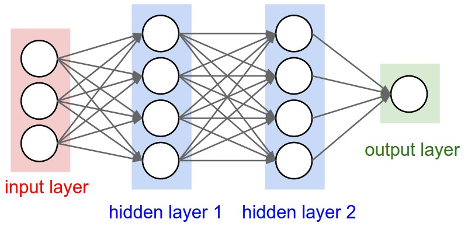

tf.keras.layers.Layer는 텐서플로우, 케라스에서 모델을 구축하기 위한 핵심 클래스이다
케라스에서 제공하는 모든 층과 커스텀 층은 이 클래스를 반드시 상속 받아야 한다.
클래스의 본질은 학습 가능한 상태와 수학적 연산을 하나의 객체로 캡슐화 하는 것 이다.
Layer 클래스는 내부적으로 add_weight를 통해 텐서를 생성하고 관리한다.
이 메서드로 생성된 가중치들은 모두 Keras에게 자동으로 추적되어진다.
1. trainable_weights (학습 가능 가중치):
역전파시 tf.GradientTape에 의해 기울기가 계산되고 옵티마이저에 의해 값이 변경되는 변수이다.
예제로 Dense층의 가중치 행렬 $W$와 편향 $b$와 Conv2D의 필터 커널 등이 있다.
2. non_trainable_weights (학습 불가 가중치):
기울기 계산 대상에서 제외되지만, 순전파 연산 중 업데이트 된다.
layer.weights를 호출하면 이 두 종류의 리스트가 합쳐진 변수를 반환.

Dense층은 신경망에서 가장 기본적이고 널리 쓰이는 완전 연결층이다.
완전 연결층 모든 노드가 다음 층의 모든 노드와 빠짐없이 연결된 신경망 구조.
입력 텐서 $X$와 가중치 행렬 $W$, 편향 벡터 $b$와 활성화 함수 $\sigma$, 출력 텐서 $Y$로 구성되어있다.
위 수식에서 $X$가 $(N, D_{in})$인 행렬 즉 N의 배치사이즈, $D_{in}$라는 입력 데이터의 특성 차원이 있으면
$W에서 $D_{out}$라는 출력 뉴런 수를 따른 $(D_{in}, D_{out})$인 행렬 가진다.
행렬 곱 연산을 통해 $(N, D_{out})$의 형태를 띄게 되며 $b$를 더한 후 활성화 함수$\sigma$를 적용한다.
1. __init__ : units, activation등의 하이퍼 파라미터만 저장합니다.
2. build : input_shape가 확정 되는 순간 호출된다.
$D_{in}$값을 알 수 있으므로 $(D_{in}, D_{out})$ 크기의 $W$와 $(D_{out},)$ 크기의 $b$ 텐서 변수를 메모리에 생성한다.
3. call : 행렬 곱셈, 덧셈, 활성화 함수 연산을 끝내면 결과 텐서를 반환한다.
4. 역전파 : 역전파 학습시, $\frac{\partial L}{\partial W}$와 $\frac{\partial L}{\partial b}$를 계산하여 옵티마이저를 통해 업데이트 한다.
import tensorflow as tf
# 케라스의 모든 신경망 층의 부모인 Layer를 상속받음.
class CustomDense(tf.keras.layers.Layer):
# 파이썬의 생성자를 통해 출력 차원 수, 활성화 함수를 받고
# **kwargs를 통해 name, dtype 등 Layer 클래스가 지원하는 추가 매개변수를 딕셔너리로 받음.
def __init__(self, units, activation=None, **kwargs):
# 부모 클래스의 초기화 메서드를 통해 **kwargs로 받은 공통 속성 등록 및 초기화
super(CustomDense, self).__init__(**kwargs)
# unit과 활성화 함수를 선언.
self.units = units
self.activation = tf.keras.activations.get(activation)
# 입력 데이터의 형태가 확정되면, Keras에 의해 한번 자동 호출되는 메서드임
def build(self, input_shape):
# 가중치 W를 담을 변수 생성 및 할당, 형태를 지정하고
# glorot_uniform(균등 분포)를 통해 입력과 출력 뉴런 수에 맞춰 최적의 난수 행렬을 만듬
# trainable=True로 역전파시 오차 기울기를 계산하여 값을 업데이트 함
# 텐서보드 시각화, 가중치 저장시 명칭 Keras에선 W를 관례적으로 kernel로 명시
self.w = self.add_weight(
shape=(input_shape[-1], self.units),
initializer='glorot_uniform',
trainable=True,
name='kernel'
)
# 편향 b를 담을 변수 생성, 할당, 형태를 지정하고
# initializer=zeros를 통해 초기값을 모두 0으로 할당.
# 이하 위와 같음.
self.b = self.add_weight(
shape=(self.units,),
initializer='zeros',
trainable=True,
name='bias'
)
# 가중치 생성이 완료 되었음을 부모 클래스에 알림.
# Keras 내부 플래그 변수가 True가 되어 이후에는 build를 건너 뜀.
super(CustomDense, self).build(input_shape)
# 모델이 데이터를 받아 순방향 연산을 수행 할 때 호출 되어지는 핵심임.
def call(self, inputs):
# Y = XW + b 연산 수행함
linear_output = tf.matmul(inputs, self.w) + self.b
# 활성화 함수 통과
if self.activation is not None:
return self.activation(linear_output)
return linear_output
x_data = tf.random.normal((32, 128))
custom_layer = CustomDense(units=64, activation='relu')
output_data = custom_layer(x_data)
print(output_data.shape) # 출력 형태: (32, 64)